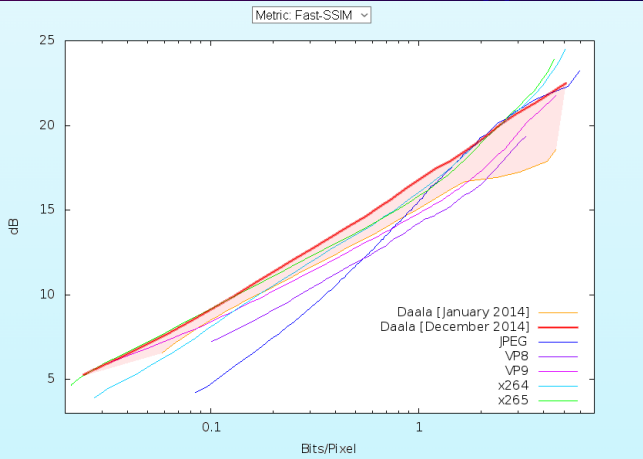

Si quieres esuchar el contenido de ésta página, reproduce lo siguiente:
¿Qué es?
Daala es un formato de codificación de video en desarrollo por la Fundación Xiph.Org, patrocinado
principalmente por Mozilla Corporation .
Daala está disponible sin regalías y su implementación de referencia se está desarrollando como software
gratuito y de código abierto .
Características
Su extensión de archivo es .ogv
Es de formato abierto
Fue desarrollado por Xiph, Mozilla y Grupo de Trabajo de Ingeniría de Internet (IETF)
Es contenido por un formato Ogg
Objetivos
Daala pretende ser una propuesta adecuada para un nuevo
estándar de codificación de video para Internet y
aplicaciones en tiempo real .
Daala está destinado a ser un formato de codificación de
video de alta eficiencia para casos de uso similares a los
de Codificación de video de alta eficiencia (HEVC o H.265)
y VP9 . Se ha dicho que el objetivo de rendimiento es ser
una generación más allá de HEVC y VP9.
Se consideran las posibilidades de procesamiento en
paralelo y se está buscando el soporte de hardware
Los coeficientes están codificados por Perceptual
Vector Quantisation (PVQ, una cuantificación de vector
esférico ), que modela la percepción humana.
Los códecs de video modernos logran la mayor parte
de su compresión a través de la predicción entre
cuadros
El método habitual para hacer esto es codificar
fotogramas clave independientes
Los fotogramas clave suelen ser mucho más grandes
que otros fotogramas. Por lo tanto, se busca
aumentar el rendimiento de dichas imágenes fijas.
Mejoras
Los códecs de imagen y video
se evalúan mediante métricas
objetivas automatizadas. Estas
son útiles y apropiadas para
mostrar mejoras relativas en
un códec
Estas métricas se recopilaron
en varias tasas de imágenes de
prueba, cada una de las cuales
tiene un tamaño de
aproximadamente un megapíxel
El área sombreada muestra el
avance que ha tenido Daala

Dato curioso
El nombre “Daala” está tomado
del personaje ficticio de la
almirante Natasi Daala del
universo de Star Wars .